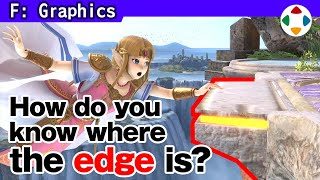
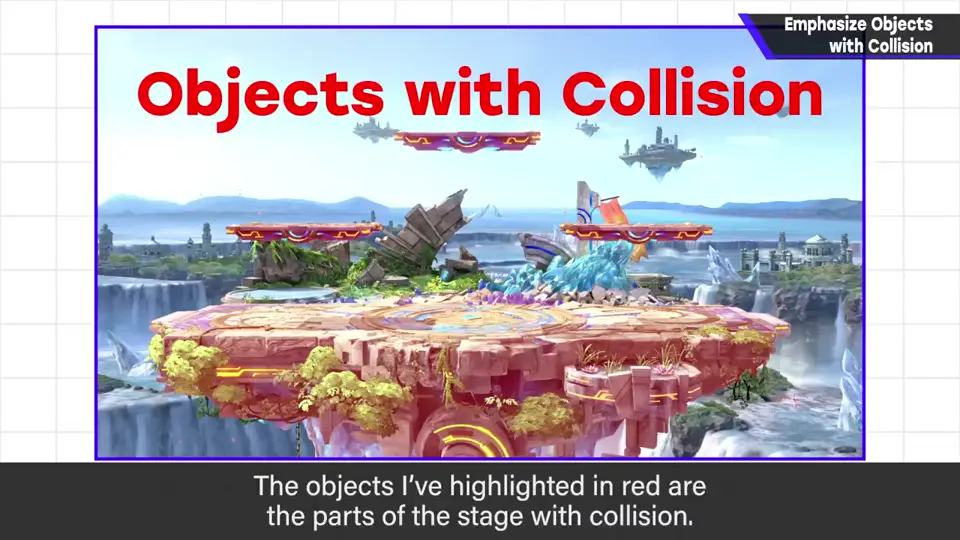
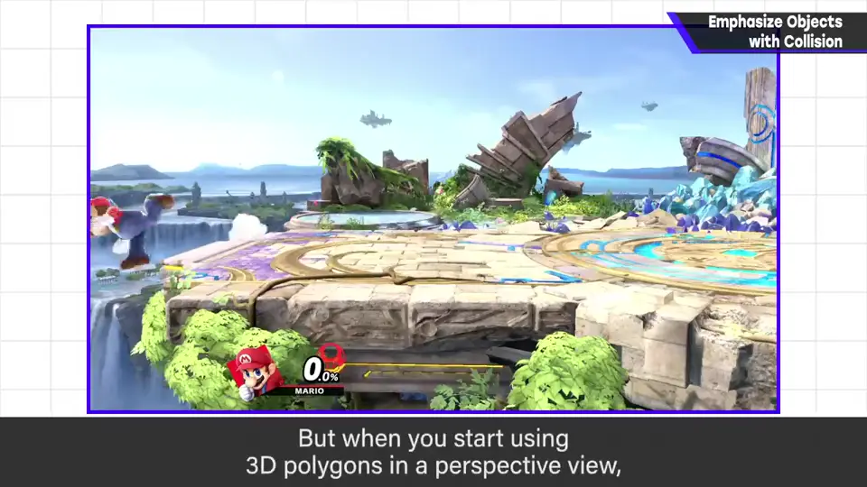
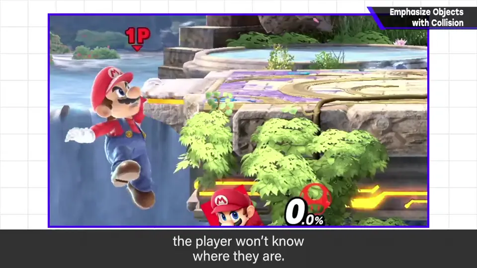
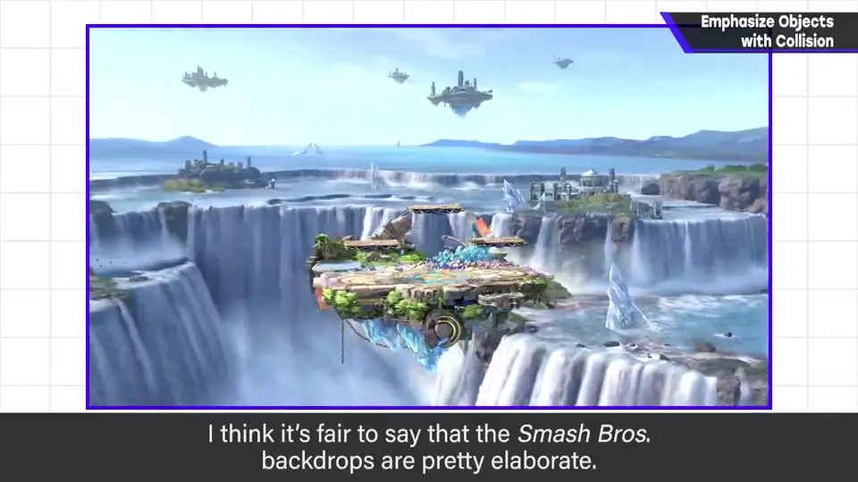
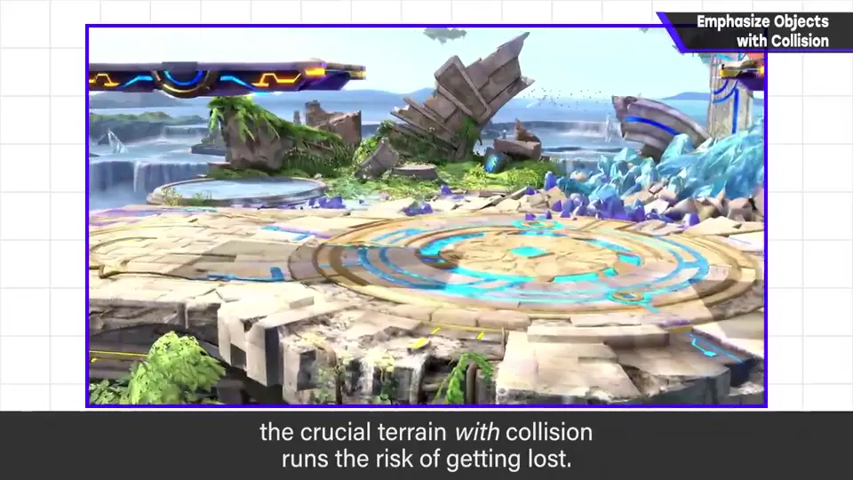
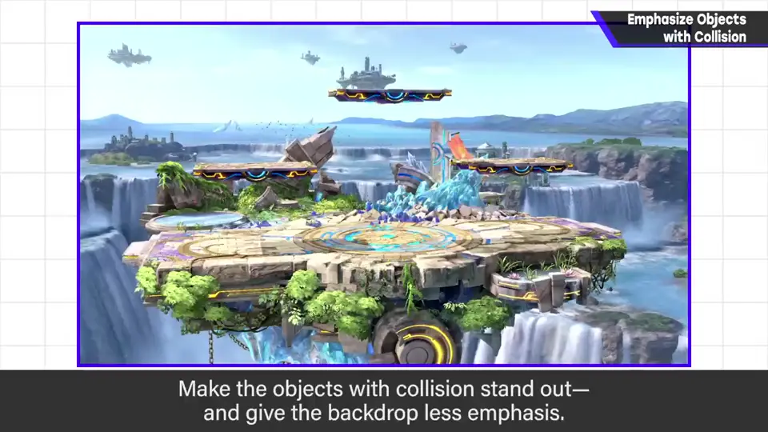
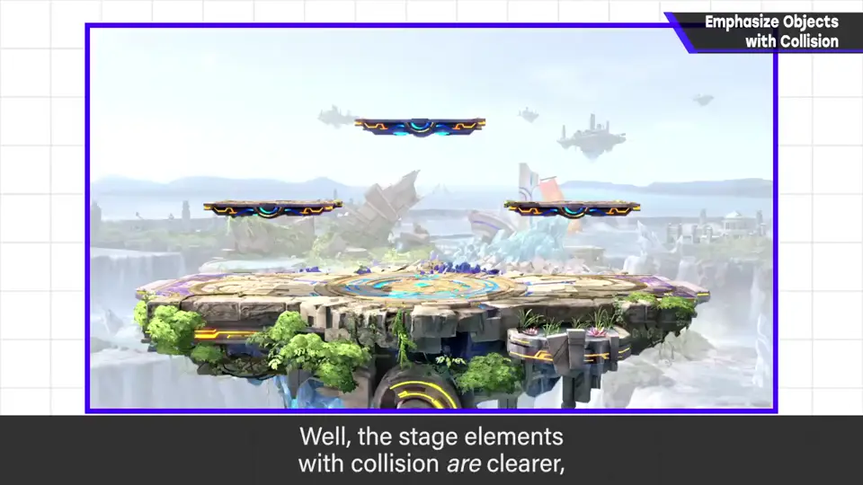

速览
这是历代《大乱斗》做舞台时每次都会讲的事，但仍很难做到——每个舞台都说类似的话，说明非常容易卡住。那就是：强调有接触判定的东西，不强调其他东西。画面中标红的是有判定的部分。《大乱斗》是动作游戏，知道哪个位置有地板理所当然但很重要；可是首先，3D 多边形加上透视，判定位置就会变难懂。而且如果有地形的部分和没有的部分没有清楚地区分强调度，就很难认清。《大乱斗》的背景整体相当讲究，但若在没有判定的地方投入太多绘制、让它显眼，关键的有地形判定的部分就可能不显眼——他会说「地形输给了远景」。要在保持美观的同时做到有判定处清楚、远景降低存在感，相当难。简单想，给没有地形判定的远景加空气透视降低存在感就行；但单纯那样做，判定也许变好懂，外观却大受损害。画面漂亮也很重要：有人说它与游戏无关，但卖不出去就没意义。一切是平衡，他认为稍微偏向游戏来想正好。美术不是只画画就好，要理解游戏的机能，画出合适的图。
1. 每次都讲的事 0:02
这是历代《大乱斗》做舞台时每次都会讲的事，但仍然很难做到。每个舞台都说类似的话，说明非常容易卡住，听一听不会吃亏。

2. 为什么重要 0:33
《大乱斗》是动作游戏，知道哪个位置有地板，理所当然却很重要。但首先，3D 多边形加上透视，判定位置就会变得难懂。


而且，有地形的部分和没有的部分如果没有清楚地区分强调程度，就难以认清。
3. 地形输给远景 1:02
《大乱斗》的背景整体相当讲究。但如果在没有判定的地方投入太多绘制、使之显眼，关键的有地形判定之处就可能变得不显眼——他会说「地形输给了远景」。



4. 美观也很重要 1:32
简单想，给没有地形判定的远景加上空气透视、降低存在感就行。但单纯那样做，判定也许好懂了，外观却大受损害。

画面漂亮也很重要。也有人认为它与游戏无关，但卖不出去就没有意义。
自测题
1. 舞台绘制的核心原则是什么？
强调有接触判定的东西，不强调其他东西。 0:30
2. 为什么不能简单地给远景加空气透视了事？
判定也许变清楚，但外观会大受损害；画面漂亮也很重要，卖不出去就没意义。 1:40
3. 为什么背景越讲究，地形反而可能越不显眼？
精细的远景会在信息量上压过有判定的地形，3D 透视又让判定位置难懂。 1:02